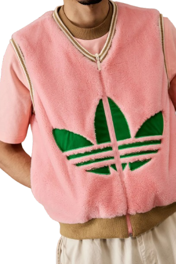

Kuratiertes Archiv — Vintage Adidas
Deutschland
TRIAD
ARCHIV
Handverlesene Y2K- & Retro-Unikate — Firebird, Adibreak, Velours. Jedes Teil ein Einzelstück.


SCAN &
STÖBERN Das ganze Archiv — live, mit sofortiger Verfügbarkeit. → triadarchiv.de
STÖBERN Das ganze Archiv — live, mit sofortiger Verfügbarkeit. → triadarchiv.de